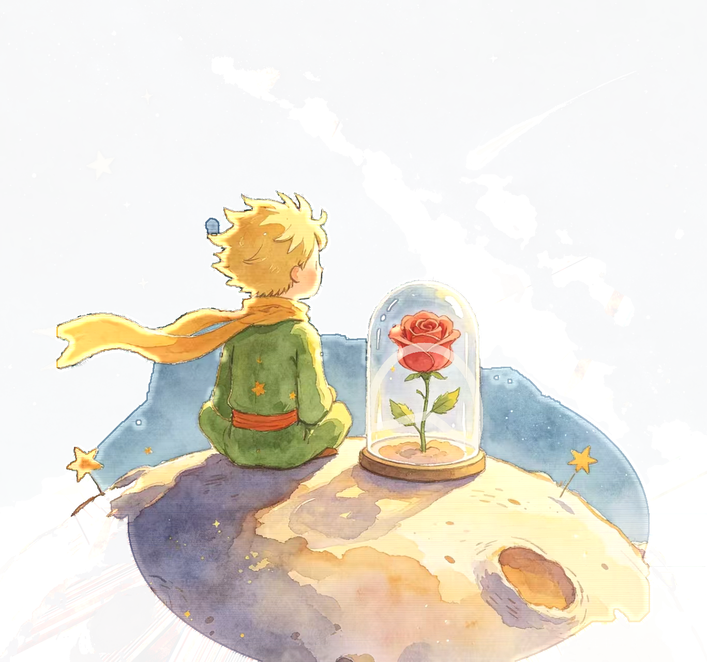

B-612 · PLANET
关于我
Rose · Planet
能力
Merchant · Planet
经历与成绩
Lamplighter · Planet
核心课程
成长故事
实践与荣誉
校园与社会实践
作品星球
Letters · From · Planets

B-612 · PLANET
Rose · Planet
Merchant · Planet
Lamplighter · Planet
Letters · From · Planets